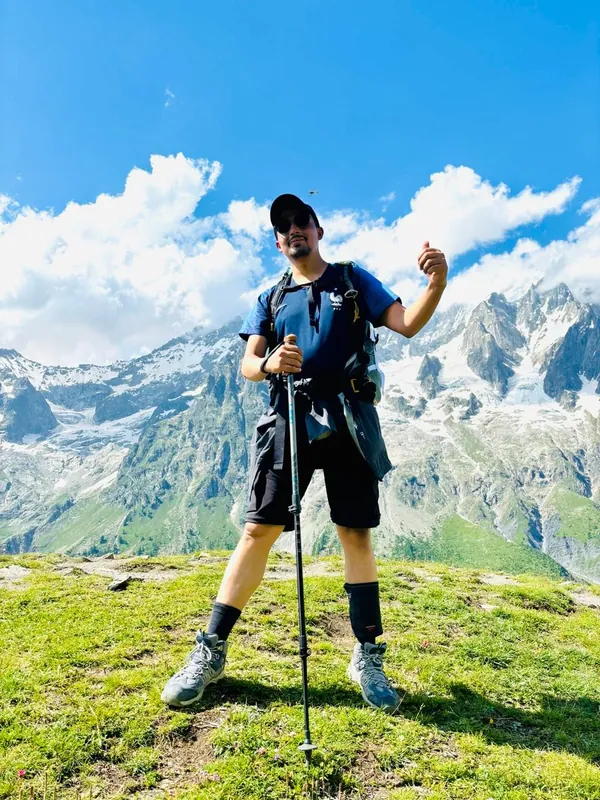

I help leaders and teams turn busy into real value.
Clear, visible goals. Teams that make their own decisions.

About
I came to coaching the long way.
Five years writing PHP. Then five years co-founding a software agency in the Kathmandu Valley, where I won the work, ran the client relationships, and learned what bad delivery costs when it’s your own payroll on the line. That’s where I found Agile. Not from a course, but from trying to make it work in my own company while still learning what it was.
Since 2020 I’ve coached over 20 teams across EdTech, transcription, typography, healthcare and retail, working with US and European companies, first from Nepal and most recently as Agile Team Coach at Snappet in the Netherlands.
What I’ve learned: busy is easy. Value is harder, and it comes from two things. Goals that everyone can see and understand, and teams trusted to decide how to reach them. My job is to build both, then step back.
I like creating spaces where people learn from each other more than from me. I explain things with stories, because stories are what people remember. And I stay calm when things get risky, something running a company teaches you.
Outside work: family, mountains, slow reading, and practising awareness.
What I do
As an Agile consultant, I work with companies in Nepal and abroad that want their teams to own delivery, not just execute it.
Agile consulting
For leaders who want to see where the busy goes. Flow metrics that show where work waits. Forecasts built on real delivery data instead of hopeful dates. Empirical product planning with Product Managers. Transparency from the team board to the leadership table.
Training and workshops
Scrum and Kanban, plus topics like Psychological Safety, OKRs and Evidence-Based Management. Live and self-paced, designed with Training from the Back of the Room and Liberating Structures. People leave able to do something, not having heard about it.
Coaching and mentoring
Working agreements teams write themselves. Transparent backlogs, refined just in time. Retrospectives grounded in evidence. Teams that run their own Scrum events and raise their own standards, until they don’t depend on me.
I’ve sat in the founder’s chair, so I coach leaders with empathy rather than theory. I know what sits behind the resistance.
Writing
I write on Medium about my own experiences and the stories behind them. Direct and opinionated on paper, pragmatic in the room.
- 5 Product Discovery Pitfalls Leading to Scrum Failures (opens in new tab)
- 3 Reasons Why Scrum Teams Fail to Create Increment in Sprint (opens in new tab)
Talks
Being an introvert, I don’t go looking for the stage or the camera. But a few talks and interviews have made it online.
Community
In 2022 I started a user group in Nepal under The Liberators Network. We meet on the first Sunday of every month, and each session is designed and facilitated by a different member using Liberating Structures. More than forty meetups so far and still going.
Mentoring newcomers and growing the Nepal Agile community is work I keep unpaid, by choice.
Ask to join the group on LinkedIn (opens in new tab)Get in touch
Based in Kathmandu from February 2027. Working with companies in Nepal, and remotely with teams anywhere. I work in Nepali and English.
Happy to talk, whether or not you have something in mind yet. LinkedIn is the easiest place to reach me.